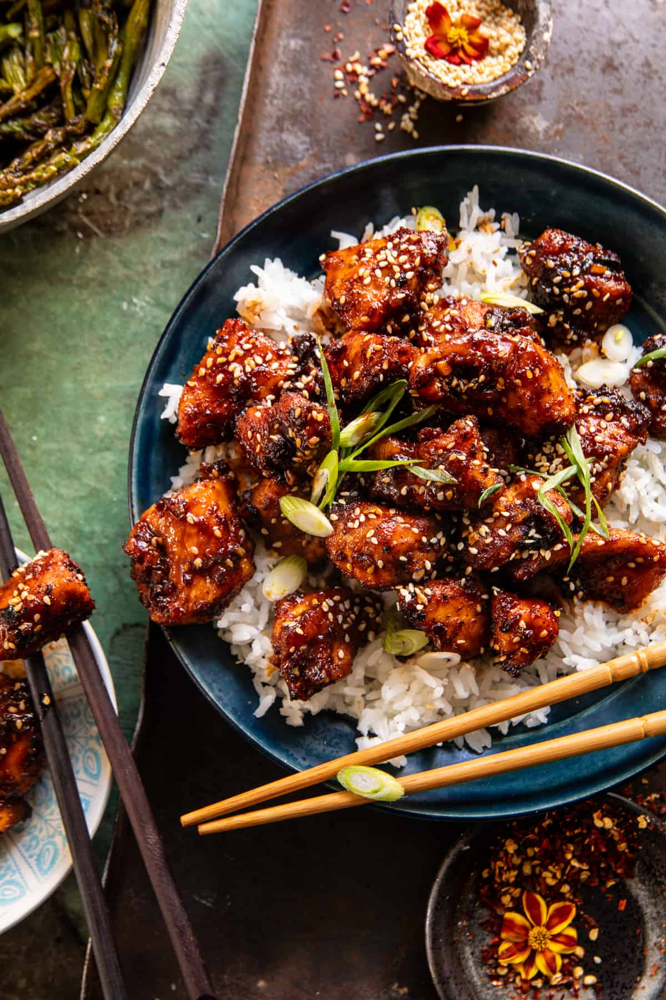

Easy, homemade crispy chicken tossed in a spicy-sweet honey garlic sauce. Serve this dish with asparagus, broccoli, or a combination of the two, cooked up right alongside the chicken. It’s the easiest sheet pan dinner. Add a side of rice for a main, or serve it on its own as an appetizer. This fun take-out-style dinner is great any night of the week!
I like to use cubed raw chicken—breasts or thighs, or a mix of the two. Toss the cubed chicken with garlic powder, black pepper, and chile flakes. I love to use Korean chile flakes. You can find them online, at Whole Foods, and in most major grocery stores in the Asian aisle.
Now add some flour. The flour allows the chicken to get crispy in the oven. It’s a small amount, so just a very light coating. It’s not a breaded chicken but it has just enough of a coating to ensure the sauce can stick nicely to the chicken.
Bake the chicken with a side of asparagus or broccoli. Depending on the size of your chicken pieces, this should take about 10 to 15 minutes to cook.
Mix the tamari (or soy sauce), with lemon juice and honey.
Then, mix in the fresh garlic, chili paste, green onions, and a drizzle of toasted sesame oil. If you don’t have toasted sesame, you can easily just omit it from the sauce.
Pour the sauce over the chicken and cook the chicken in the sauce over medium-high heat. Stir with a wooden spoon.
Imagine needing more instruction than just the title of this step...